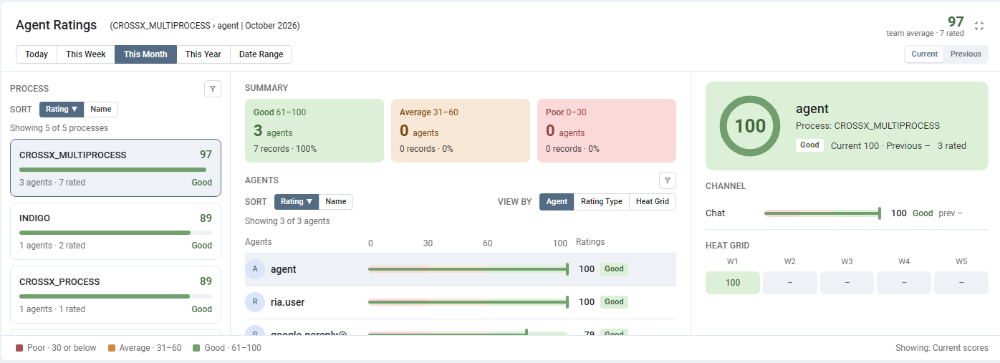
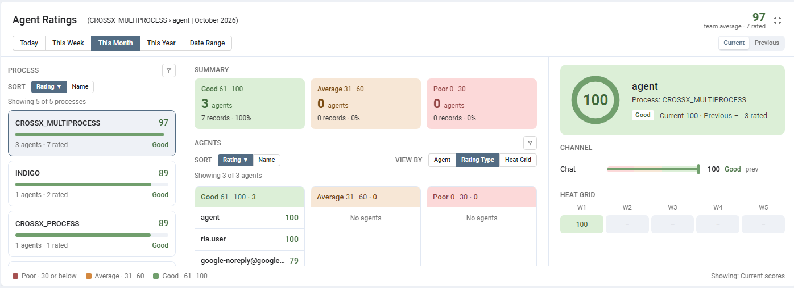
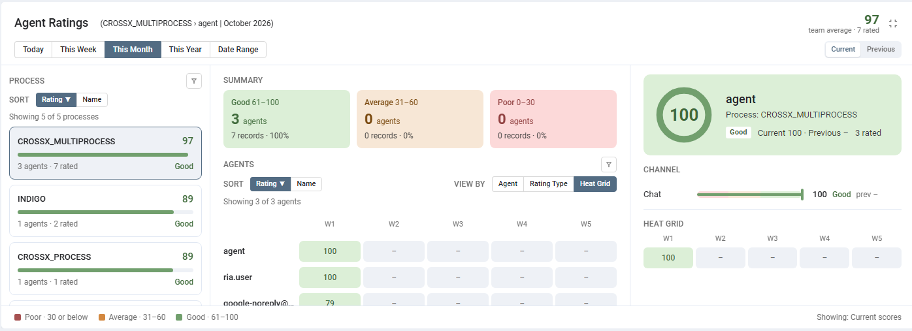
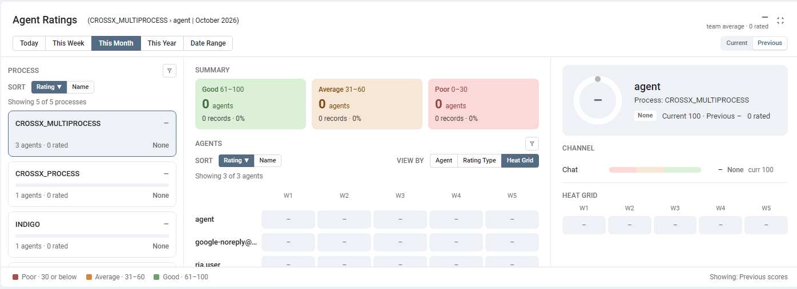

Agent Ratings Widget
See how each agent is scoring on the AI ratings of their conversations — per process, per channel and over time — and how that compares with the period before.
01
What this feature does
One place to compare agents.
Every conversation that has an AI rating gives each agent a score. The Agent Ratings widget gathers those scores and shows them in three levels: the process, the agents of that process, and one agent with a score for each channel and a trend. Colours tell you at a glance who is doing well and who needs help:
| Band | Score | Colour |
|---|---|---|
| Good | 61 to 100 | Green |
| Average | 31 to 60 | Orange |
| Poor | 0 to 30 | Red |

02
Where to find it
It sits on the Dashboard.
Open the Dashboard (the first icon in the left bar) and scroll to Agent Ratings. Like the other dashboard widgets it spans the full width, can be moved and resized, and has a full-screen button at its top right corner. The title line tells you what you are looking at: process › agent | period. The large number at the top right is the team average of the selected process, with the number of conversations it is based on.
03
Choose the period
Five quick choices.
| Button | Shows | Heat grid columns |
|---|---|---|
| Today | The current day | 3-hour blocks (0h, 3h … 21h) |
| This Week | The current week | One column per day |
| This Month | The current month | One column per week (W1, W2 …) |
| This Year | The current year | One column per month |
| Date Range | Any From and To date you enter | Days, weeks or months, depending on how long the range is |
For Date Range choose both a From and a To date; otherwise you are asked to select them. The whole of the last day is included.
04
Pick a process
The left column.
Each process gets a card with its average score, a bar, the number of agents and the number of conversations rated, and its band (Good, Average, Poor, or None when nothing was rated). Click a card to open that process. The first five are shown; click Load more processes for the rest.
- Sort the cards by Rating or by Name; click the active one again to reverse the order.
- The funnel icon filters the list by process name.
05
Look at the agents
The middle column.
The Summary boxes count how many agents of the process are Good, Average and Poor, with the records and the share they stand for. Below them the Agents are shown in the way you choose with View by:
- Agent — one row per agent with a score bar, the score and the band. Use Sort (Rating or Name) and the funnel to find an agent by name.
- Rating Type — three columns, Good, Average and Poor, each listing the agents in that band with their scores.
- Heat Grid — a table of agents against time: each cell holds the agent’s score for that day, week or month, coloured by band. A dash means nothing was rated then.


06
One agent in detail
The right column.
Click an agent (in any view) to see them on the right: a ring with their score, their name, process and band, and how many conversations were rated. Under it:
- Channel — a score bar for each channel the agent was rated on, with the previous period’s score beside it.
- Heat Grid — the agent’s score for each day, week or month of the period.
The close button on the agent panel takes you back to the process view.
07
Compare with the period before
Current and Previous.
The Current / Previous switch at the top right changes every number, bar, count and heat cell of the widget at once. Previous shows the period of equal length right before the one selected (the month before This Month, the six months before a six-month range, and so on). The footer says which one you are looking at: Showing: Current scores or Showing: Previous scores.

08
How the score is worked out
So the numbers can be trusted.
- Only conversations that have an AI rating are counted. A conversation without one is left out.
- An agent’s score on a conversation is the score shown for that agent on the conversation’s AI Insights. The customer is not counted, and an agent with no score on a conversation is left out of it.
- An agent’s score for the period is the average of their scores over all the conversations they were rated on. A process or channel average is built the same way.
- The scores are from 0 to 100, in the bands Good, Average and Poor above.